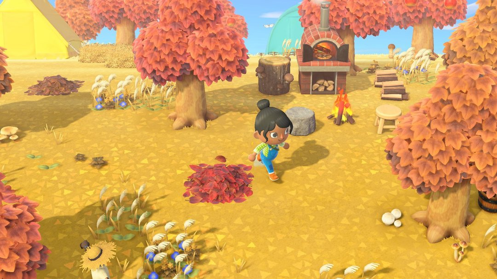

キノコの季節：11月いっぱい、毎日木のそばに新しいキノコ
5種類のキノコの見つけ方、めずらしいキノコは掘る、キノコの家具12種類とキノコ料理
北半球の11月、南半球の5月は、島の木のそばに毎日キノコが生えてきます。全部で5種類、まるいキノコ、ほそいキノコ、ひらたいキノコ、りっぱなキノコ、めずらしいキノコです。
最初の3つはよく見かけるキノコで、キノコのランプ、キノコのパラソル、キノコのスクリーンなどの家具の素材になります。りっぱなキノコとめずらしいキノコはなかなか見つからず、1個10,000ベルと16,000ベルで売れる、季節の素材の中でいちばんの高値です。この季節のDIYレシピは全部で12種類です。

秋の島。木の下にキノコが見えます（画像：Nookipedia）
01いつ拾える？
日付はゲーム内の時間です。南半球は北半球より半年遅れます。
| 半球 | 開始 | 終了 |
| 北半球 | 11月1日 | 11月30日 |
| 南半球 | 5月1日 | 5月31日 |
北半球の11月はにぎやかです。どんぐりとまつぼっくりはまだゆすって取れ、11月16日〜25日にはもみじもやってきます。11月の第4木曜日はサンクスギビングで、北半球ではフランクリンがグラタンを作るときにキノコを1つ頼んでくることがあるので、その時期は手元に1つ残しておきましょう。
025種類のキノコの拾い方
キノコは木のそばに生え、こうようじゅにもしんようじゅにも生えます。毎日5個ずつ新しく生え、島に30個たまるとそれ以上は生えなくなるので、1〜2日おきに木をたどって拾い、いっぱいにならないようにしましょう。
めずらしいキノコは地面の上には生えません。木のそばの土の中に埋まっていて、地面にひび割れが見えるので、スコップで掘り出します。
| キノコ | 売値（ベル） | 手に入れ方 |
| まるいキノコ | 200 | 木のそばで拾う |
| ほそいキノコ | 300 | 木のそばで拾う |
| ひらたいキノコ | 200 | 木のそばで拾う |
| りっぱなキノコ | 10,000 | 木のそばで拾う。数は少ない |
| めずらしいキノコ | 16,000 | 木のそばの地面のひび割れをスコップで掘る |
島の評価が高いほど、いいキノコが増える
りっぱなキノコとめずらしいキノコが出る確率は、案内所での島の評価によって変わります。
| 島の評価 | りっぱなキノコ | めずらしいキノコ |
| ★3 | 4% | 1% |
| ★4 | 10% | 5% |
| ★5 | 15% | 10% |
★5の島なら、新しく生えるキノコのほぼ4個に1個がいいキノコです。
キノコが生えるのは自分の島だけで、飛行機で行く離島には生えません。かっぺいのキノコの島にはあります。03を見てください。
注意キノコは食べることもでき、食べるとフルーツと同じようにパワーがついて、木を掘り起こして動かしたり、岩を壊したりできます。食べる前によく確かめて、りっぱなキノコやめずらしいキノコを食べてしまわないようにしましょう。
03DIYレシピの入手先
いちばん大きいのはふうせんです。キノコの季節に飛んでくるふうせんを撃ち落とすと、この季節のDIYレシピが落ちてきます。この季節のレシピを全部覚えるまで出続けます。
次に季節の初日の案内所。北半球は11月1日、南半球は5月1日に、たぬきちかしずえが「キノコのリース」のDIYレシピをくれます。もらえるのは初日だけです。
3つ目はかっぺいのボートツアーです。下で説明します。
逃してしまったら：かっぺいの船で取り戻す
桟橋のかっぺいは、1日1回、1,000マイルで海へ連れ出してくれます。ときどき季節が止まったままの島に着くことがあり、キノコの島もその1つで、季節の島はそれぞれ確率3%ほどです。その島では木のそばでキノコが拾え、どんぐりとまつぼっくりもゆすって取れて、浜辺のメッセージボトルにキノコのDIYレシピが入っていることもあります。
確率は高くないので、運だめし程度に考えておきましょう。また、自分の島でこの季節を一度経験していないと、その島には連れていってもらえません。ホテルの1つ目のVIPルームをコーディネートすると、かっぺいは1日にもう1回（ホテルチケット100枚）船を出してくれるようになり、当たるチャンスも少し増えます。
04DIYレシピ12種類の一覧
| DIYレシピ | 素材 |
| キノコのリース 季節の初日に案内所でもらえる | きのえだ10、まるいキノコ1、ほそいキノコ1、ひらたいキノコ1 |
| キノコのランプ | ほそいキノコ1、ねんど5 |
| キノコのスツール | まるいキノコ2 |
| キノコのテーブル | ひらたいキノコ2、もくざい6 |
| キノコのパラソル | ひらたいキノコ3 |
| キノコのスクリーン | ほそいキノコ3 |
| キノコのげんぼく | ほそいキノコ2、まるたのスツール1 |
| キノコのかべがみ | りっぱなキノコ1、まるいキノコ1、ほそいキノコ1、ひらたいキノコ1 |
| キノコのもりのかべ | りっぱなキノコ2、まるいキノコ2、ほそいキノコ2、ひらたいキノコ2、もくざい10 |
| キノコのもりのゆか | めずらしいキノコ1、まるいキノコ2、ほそいキノコ2、ひらたいキノコ2、ざっそう10 |
| キノコのかさ | ひらたいキノコ3 |
| キノコのステッキ | ほそいキノコ3、ほしのかけら3 |
12種類を全部作ると、ほそいキノコ15、ひらたいキノコ14、まるいキノコ8、りっぱなキノコ3、めずらしいキノコ1、ほかにもくざい16、ざっそう10、きのえだ10、ねんど5、ほしのかけら3、まるたのスツール1つが必要です。
りっぱなキノコを使うのはキノコのかべがみとキノコのもりのかべだけ、めずらしいキノコを使うのはキノコのもりのゆかだけです。この2つは必要な数だけ取っておき、余った分は売っても損はありません。
05まず作りたいもの
キノコのパラソル：大きなキノコをパラソルにしたもので、外に置くととても目立ちます。ひらたいキノコ3個で作れます。
キノコのランプ、キノコのスツール、キノコのテーブル、キノコのスクリーン：キノコ家具のセットで、どれも素材が少なく、作ったあとリメイクで色を変えることもできます。
キノコのもりのかべ＋キノコのもりのゆか：部屋がキノコの森に変わります。りっぱなキノコとめずらしいキノコが必要で、そろえるのはいちばん大変ですが、いちばん見ごたえがあります。
キノコのリース：初日にもらえるレシピ。壁にかけると秋らしい雰囲気になります。
キノコは料理にも使える
料理ができるようになると、キノコも料理に使えます。下の料理のレシピは住民から教わるもので、ヒラメのソテーはヒラメを釣ったときに覚えます。
| 料理 | 素材 |
| キノコのサラダ | まるいキノコ1、ひらたいキノコ1、ほそいキノコ1 |
| キノコのポタージュ | こむぎこ1、まるいキノコ1、ひらたいキノコ1 |
| なめたけ | ほそいキノコ2 |
| キノコのクレープ | こむぎこ2、まるいキノコ1、ほそいキノコ1 |
| キノコカレー | こむぎこ3、まるいキノコ1、ひらたいキノコ1、ほそいキノコ1 |
| キノコのピザ | こむぎこ3、まるいキノコ2、ひらたいキノコ2 |
| キノコのアヒージョ | まるいキノコ1、ひらたいキノコ1、ほそいキノコ1、めずらしいキノコ1 |
| ヒラメのソテー | ヒラメ1、ほそいキノコ1 |
キノコのアヒージョにはめずらしいキノコが1つ必要です。作る前に、キノコのもりのゆかのために取っておきたくないか考えてからにしましょう。
06アップデートでの変化
キノコ料理は、Ver.2.0で料理が追加されてから作れるようになりました。かっぺいのボートツアーはVer.2.0で、ホテルの1つ目のVIPルームをコーディネートすると1日もう1回乗れる仕組みはVer.3.0で追加されました。
Nook Circle · App Store で「Nook Circle」を検索